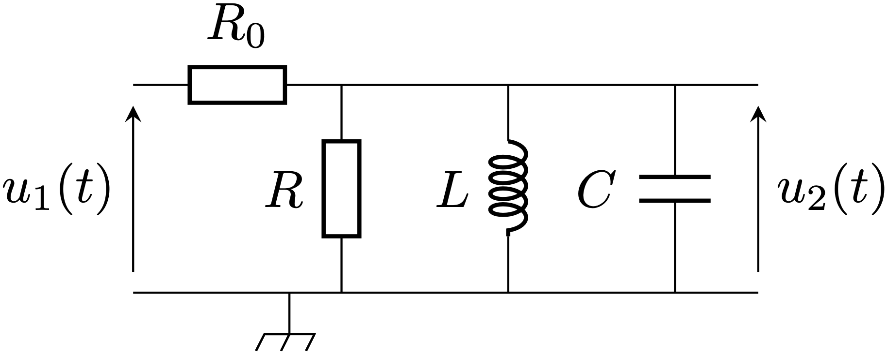
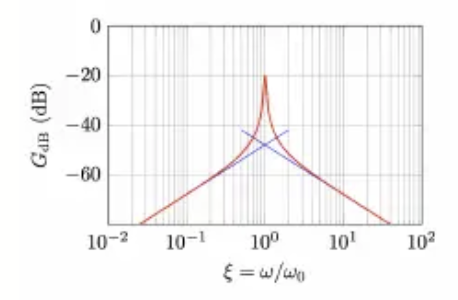

1. Préciser la nature de ce filtre.
2. Exprimer la fonction de transfert de ce filtre sous la forme :
$\underline{H}=\frac{A_0}{1+jQ(x-1/x)}$ où $x = \omega/\omega_0$.
3. Tracer le diagramme de Bode en amplitude en fonction de $log(x)$, on donne
$A_0 = 0,1$, $Q = 25$, $log(25)\simeq 1,4$.
On utilise le dispositif complet pour suivre les déplacements $x$ de la partie mobile d’un
capteur capacitif dont la capacité est donnée par la loi :
$C(x)=C_0(1-\frac{\lvert x\rvert }{D})$ avec $C_0=10 \; \mu F$ et $D=10 \; mm$.
On accède à cette position en mesurant la fréquence centrale du filtre $f_0(x)$.
On rappelle que $f_0(x) \propto \frac{1}{\sqrt{C(x)}}$.
4. Montrer par un développement limité que pour un petit déplacement
$x$ ($\lvert x \rvert /D \ll 1$) la fréquence centrale peut se mettre sous la forme
$f_0(x) \simeq a \lvert x \rvert + b$, et expliciter $a$ et $b$ en fonction des données.
5. On note $\Delta f = (f_0(x) -f_0(x=0))$ la variation de fréquence liée à un
déplacement. La plus petite variation détectable est $\Delta f_{min} = 3 \; Hz$ et on prends $L=1 \; mH$.
Quel est le plus petit déplacement détectable ?
Commentaires
Encore jamais posé !
Corrigé
1. Filtre passe-bande.
2. $$A_0=\frac{1}{1+R_0/R} \; \; Q=\frac{RR_0}{R+R_0}\sqrt{\frac{C}{L}} \; \; \omega_0=\frac{1}{\sqrt{LC}}$$ 3. 
4. On a : $$a=\frac{1}{4\pi D\sqrt{LC_0}} \; \; b=\frac{1}{2\pi\sqrt{LC_0}}$$ 5. $x_{min}=38 \; \mu m$